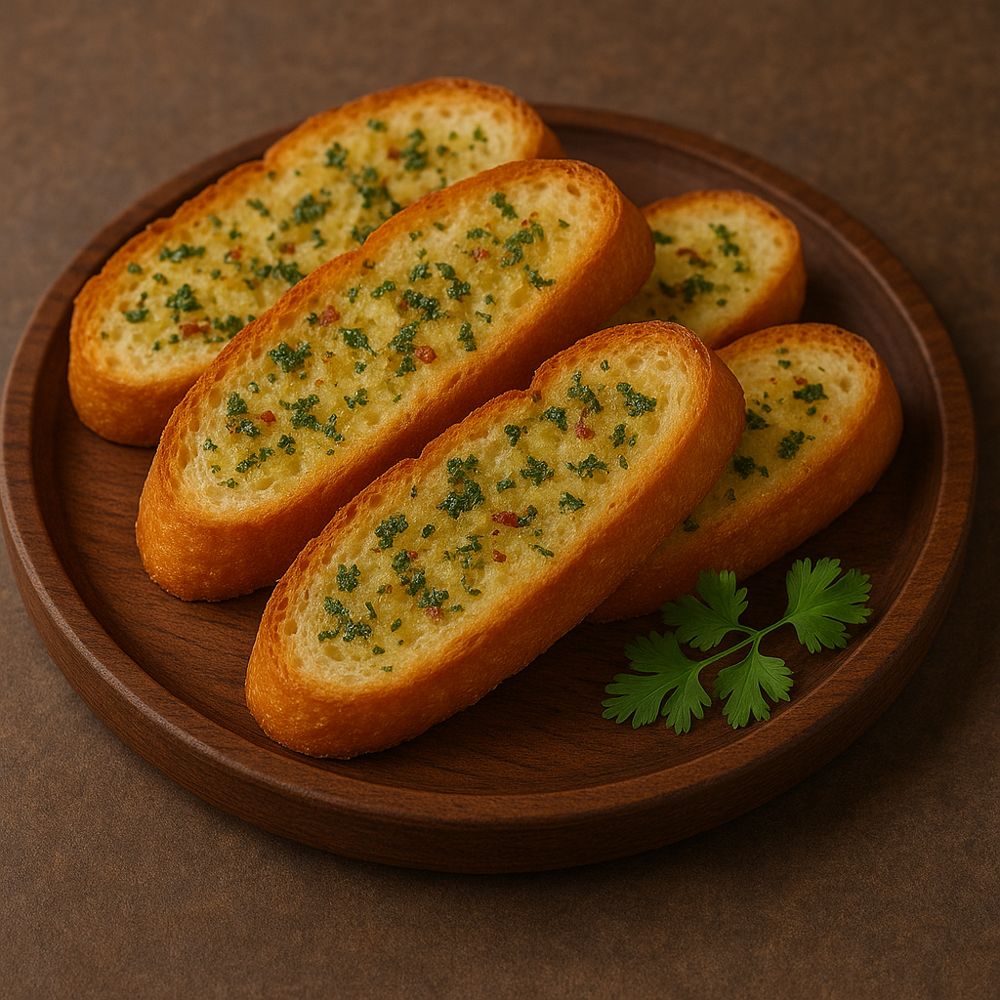

🧄 Garlic Bread
Description
Garlic bread is a beloved side dish that combines crusty bread with a savory blend of garlic, butter, and herbs. It's golden and crispy on the outside, warm and soft on the inside — the perfect companion to pasta, soup, or as a tasty snack on its own.
Ingredients
- 1 baguette or Italian bread
- 4 tbsp unsalted butter (softened)
- 3-4 garlic cloves (minced)
- 1 tbsp fresh parsley (chopped)
- 1/4 tsp salt
- Grated Parmesan or mozzarella cheese (optional)
Steps
- Preheat oven to 375°F (190°C).
- Slice bread in half lengthwise or into thick slices.
- In a bowl, mix butter, garlic, parsley, and salt.
- Spread the garlic butter mixture over the bread.
- Optional: Add grated cheese for a cheesy version.
- Bake for 10-12 minutes until golden and crisp.
- For extra crispiness, broil for 1-2 minutes at the end (watch carefully!).
- Serve warm and enjoy!